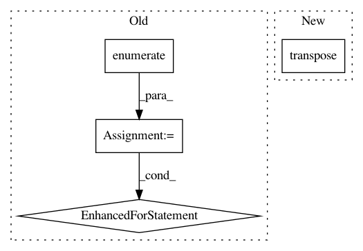

eecfa078a26ec4552ad3b72df0ba3fe02e37b58e,modAL/uncertainty.py,,classifier_entropy,#Any#Any#,73
Before Change
entr = np.zeros(shape=(X.shape[0],))
for unc_idx, unc in enumerate(classwise_uncertainty):
entr[unc_idx] = entropy(unc)
return entr
After Change
classwise_uncertainty = classifier.predict_proba(X, **predict_proba_kwargs)
return np.transpose(entropy(np.transpose(classwise_uncertainty)))
In pattern: SUPERPATTERN
Frequency: 3
Non-data size: 4
Instances
Project Name: modAL-python/modAL
Commit Name: eecfa078a26ec4552ad3b72df0ba3fe02e37b58e
Time: 2017-12-16
Author: 28926195+cosmic-cortex@users.noreply.github.com
File Name: modAL/uncertainty.py
Class Name:
Method Name: classifier_entropy
Project Name: chainer/chainercv
Commit Name: 827e12f3b9506e0f78cc79445441cd9d1f25c055
Time: 2018-04-24
Author: Hakuyume@users.noreply.github.com
File Name: chainercv/links/model/yolo/yolov3.py
Class Name: YOLOv3
Method Name: __call__
Project Name: CellProfiler/CellProfiler
Commit Name: 3df28dc6f0bb0704febd6bd1467bb728f4fbe771
Time: 2020-08-13
Author: beth.cimini@gmail.com
File Name: cellprofiler/modules/measuretexture.py
Class Name: MeasureTexture
Method Name: run_one